Projets
| # | Projet |
|---|---|
| 1 | Bugtracker |
| 2 | Kitchen |
🐞 Bugtracker
Introduction
Si vous souhaitez voir mon premier projet personnel, j'ai réalisé ce Bugtracker en environ 1 mois durant ma formation en développement .NET.
Voici les liens vers le code source des deux parties du projet 🐞 Bugtracker, sur GitHub :
Détails
🐞 Bugtracker est une application web visant à assurer le suivi de bugs rencontrés lors de développement de divers logiciels.
La partie visuelle de ce site est faite avec Blazor Web Assembly, et la partie serveur est constituée principalement d'une ASP.NET API.
Les données sont stockées de manière persistante dans une base de données SQL Server, créée via des scripts en Transact-SQL. L'accès à ces données se fait via ADO.NET.
1. Login
Un système d'authentifcation par JWT permet d'accéder au site, après que l'on ait créé son compte utilisateur.
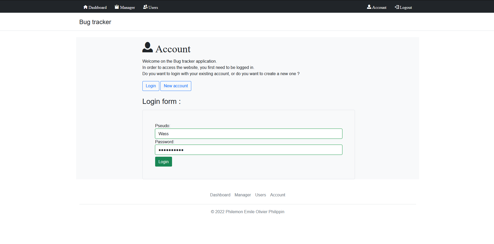2. Dashboard
Sur le Dashboard, on peut consulter la liste des tickets qui nous sont attribués, pour que l'on puisse résoudre les bugs concernés.
On peut également consulter la liste des projets sur lesquels on travaille actuellement.
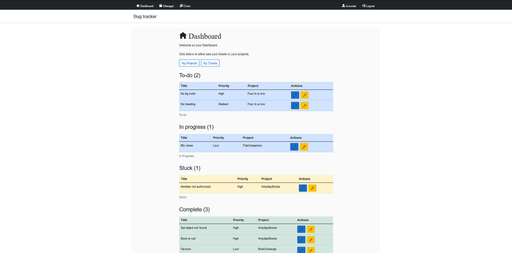3. Project Manager
Le Bugtracker assigne à chaque utilisateur l'un de ces cinq rôles : Developer, Tester, Project manager, Administrator et Web Master.
Si l'on a au minimum le rôle de Project manager, cette page-ci nous permet de consulter, de modifier, de créer ou de supprimer un projet.
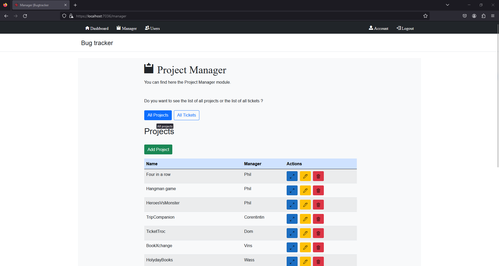L'on peut faire les même opérations sur la liste de tous les tickets. De plus, le Project manager peut également assigner le ticket à un développeur.
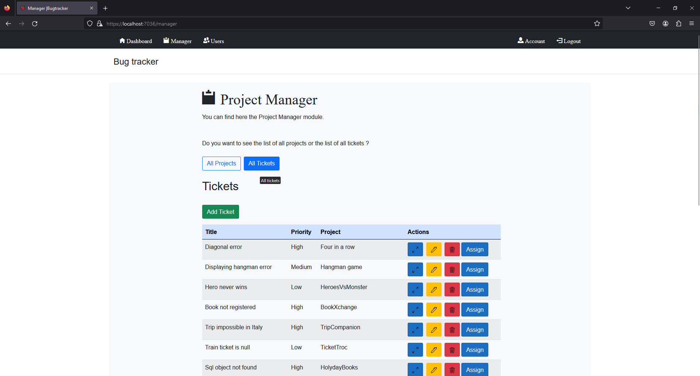4. Users management
La page Users management nous permet de gérer les comptes utilisateurs de la plateforme.
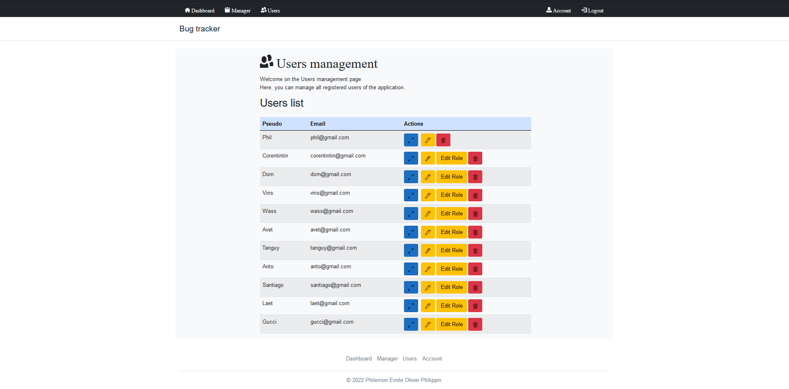5. Account
Sur la page Account, on peut consulter son profil. On peut y changer les informations du profil ou encore changer son mot de passe.
Enfin, une page Logout est également prévue pour que l'on puisse se déconnecter.
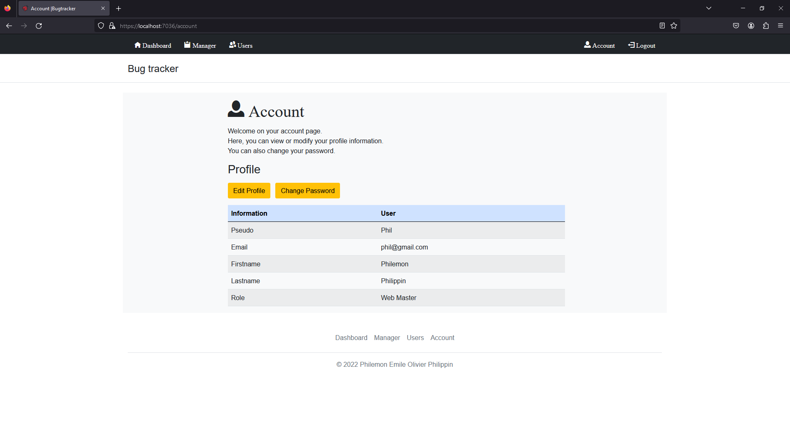🍽️ Kitchen
Introduction
Kitchen est une application web utile pour gérer des recettes de cuisine. A ce jour, c'est mon projet avec le plus d'envergure.
Voici les liens vers le code source des deux parties du projet 🍽️ Kitchen, sur GitHub :
Détails
🍽️ Kitchen est une application web visant à gérer des recettes de cuisine.
La partie visuelle de ce site est faite avec Angular, et la partie serveur est constituée principalement d'une ASP.NET API.
Les données sont stockées de manière persistante dans une base de données SQL Server, créée via Entity Framework. L'accès à ces données se fait également via Entity Framework.
1. Recipe list
La page centrale est la liste de recettes. On y retrouve plusieurs composants tels que la barre de recherche utilisée pour filtrer les recherches, un bouton pour ajouter une recette, la pagination et enfin la liste de recettes.
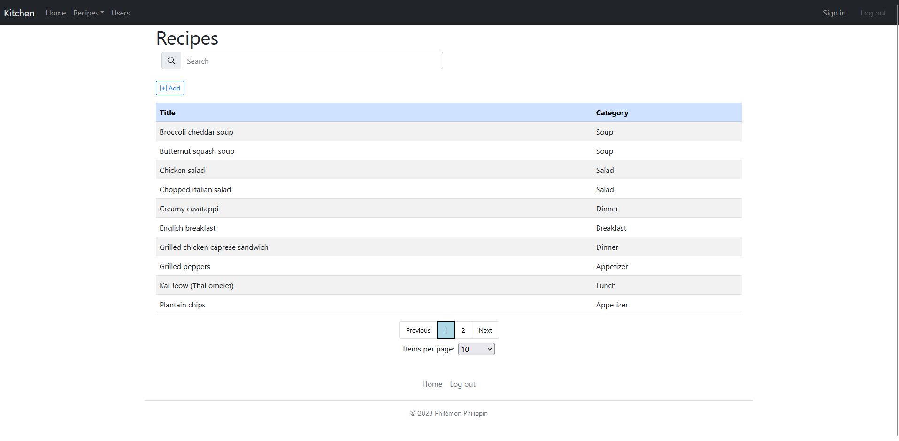La pagination permet de choisir le nombre de recettes affichées ainsi que le numéro de la page souhaitée.
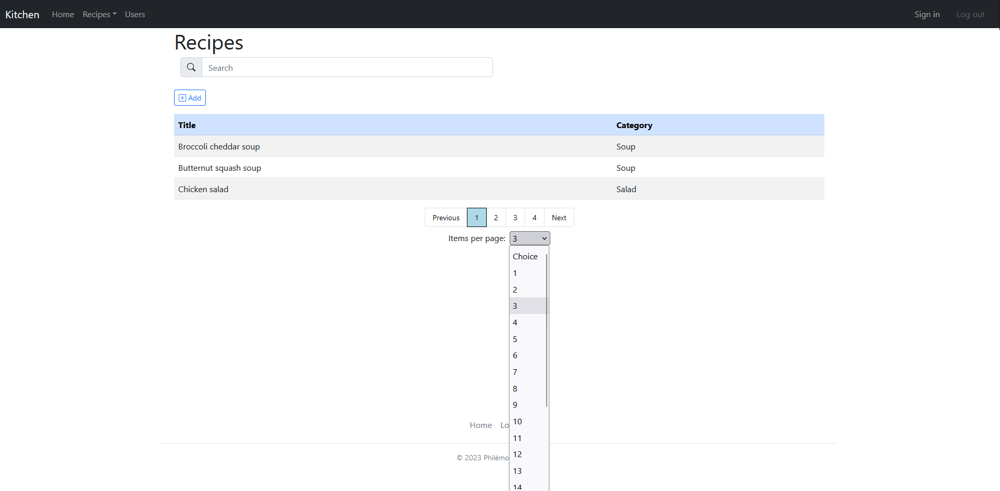Le bouton "Add" permet d'afficher un composant nous permettant d'ajouter une recette à la liste.

2. Recipe details
Lorsqu'on sélectionne une recette dans la liste, l'on arrive sur la page contenant les détails de cette recette. Voici les deux captures d'écran présentant cette page.
La première partie de la page présente les détails de la recette, ainsi que les ingrédients présents dans celle-ci.
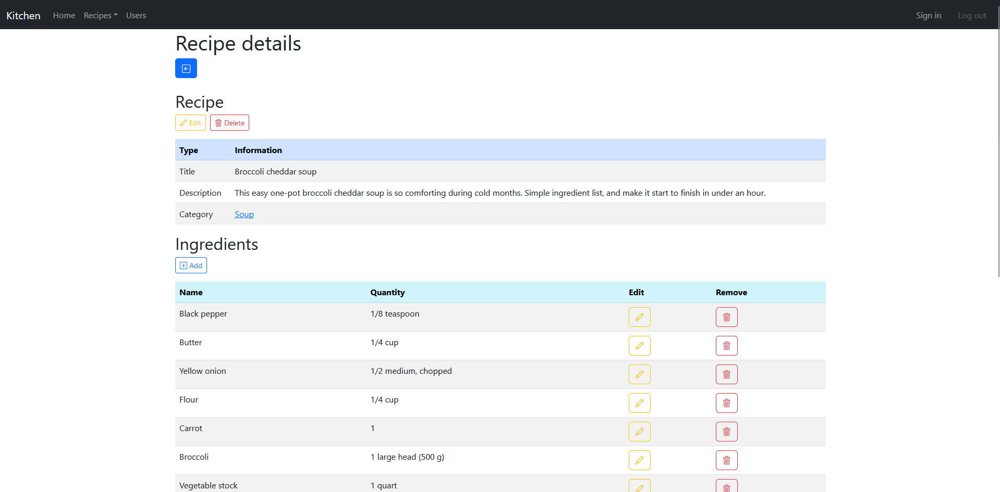La deuxième partie de la page présente les étapes de préparations de la recette.
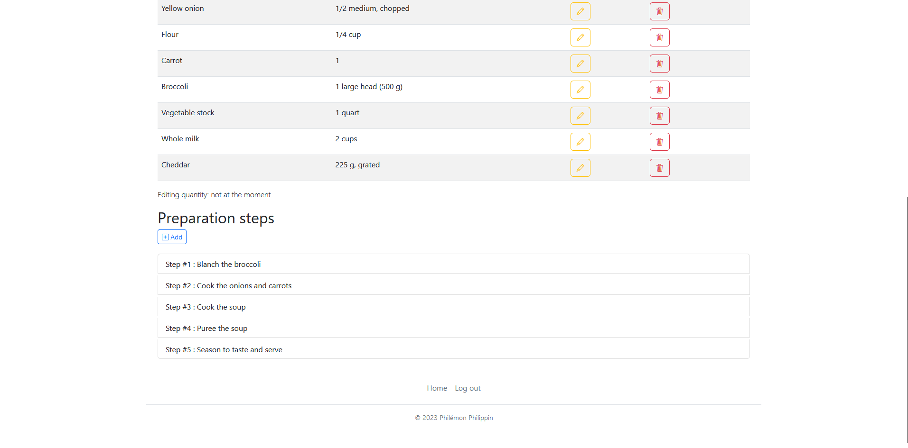Un composant s'affiche lorsque l'on clique sur le bouton Edit afin de modifier la recette en question.
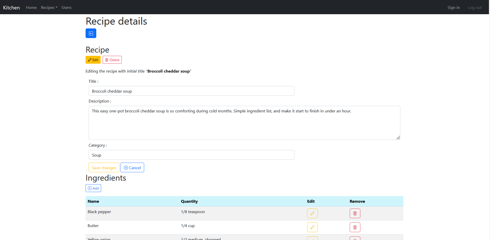Un peu plus bas, dans la liste des ingrédients de la recette, nous pouvons changer la quantité de l'ingrédient concerné en cliquant sur le bouton jaune. Le bouton "Add" permet d'ajouter un ingrédient à la recette.
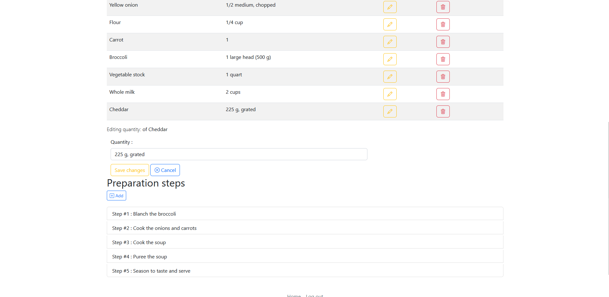Tout en bas de la page, le bouton "Add" permet d'ajouter des étapes de préparation pour la recette. Chaque élément sur cette page est sélectionnable. L'on peut cliquer sur la catégorie de recette, sur un ingrédient ou sur une étape de préparation de recette.
3. Category, ingredient and preparation step details
Si l'on sélectionne la catégorie de la recette, nous arrivons sur la page des détails de la catégorie en question. Le design de cette page est réutilisé pour les pages relatives aux détails d'un ingrédient et aux détails d'une étape de préparation.
Ces trois pages nous permettent de consulter les informations détaillées sur l'entité en question et nous permettent également de la modifier ou de la supprimer complètement.

4. Category list
La barre de navigation nous permet d'aller sur la page affichant la liste des catégories.
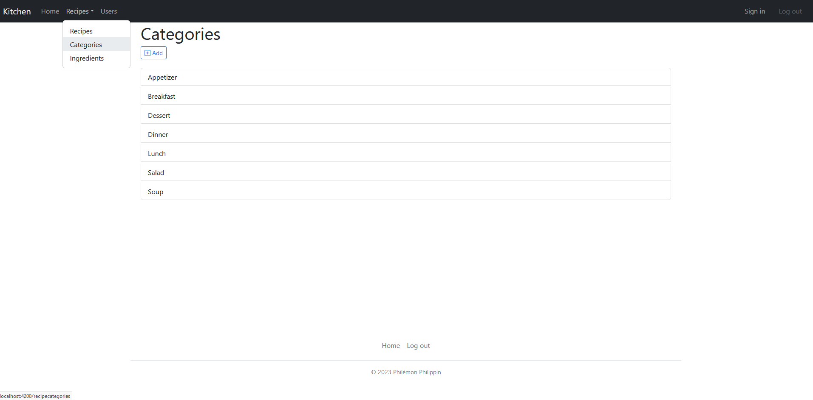5. Ingredient list
La barre de navigation nous permet également d'aller sur la page affichant la liste des ingrédients. L'on peut ici aussi retrouver le composant de pagination nous permettant de choisir le nombre d'ingrédients à afficher et le numéro de la page souhaitée.
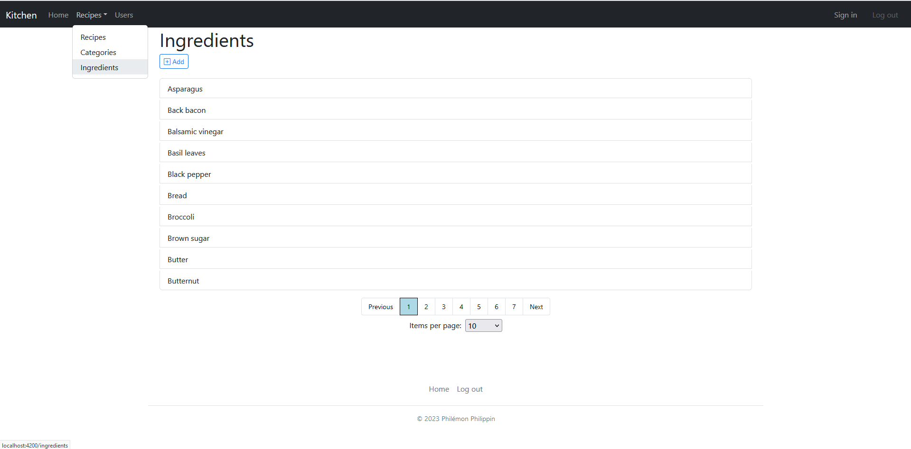